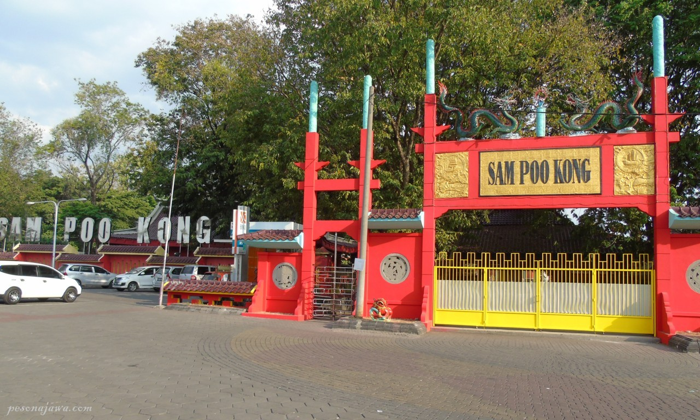

pesonajawa.com -- Spiritual Tourism
Diperbaharui: Thursday, November 11, 2021
Sam Poo Kong
Address: Jl. Simongan No.129, Bongsari, Semarang Barat, Kota Semarang, Jawa Tengah 50148
Kecamatan Semarang Barat, Kota Semarang
S: 7°2'19.20" E: 110°21'1.20"
Lat: -7.03866672516 Long: 110.35033416748

Pelayaran Laksamana Zheng He.
Sahabat pesonajawa, pada masa Dinasti Ming di Tiongkok, disebutkan bahwa ada tujuh ekspedisi pelayaran angkatan laut yang dipimpin oleh Laksamana Zheng He ke Samudera Barat yang dilakukan pada tahun 1405 sampai dengan tahun 1433.
Dibawah kekaisaran Yongle, pada bulan Maret - April tahun 1405, Laksamana Zheng He diberikan tugas untuk mempimpin 27.000 tentara menuju Samudera Barat. Titah kaisar dikeluarkan pada 11 Juli 1405, dengan perintah melakukan ekspedisi ke Samudera Barat. Pada tahun 1406, armada pelayaran Laksamana Zheg He mendarat di Pulau Jawa untuk yang pertama kali.
Sejarah Kelenteng Sam Poo Kong.
Dalam dialek Hokkian, Sam Poo Kong atau San Bao Dong (Mandarin) artinya adalah goa San Bao. Kelenteng Sam Poo Kong dibangun untuk mengenang Laksamana Zheng He (Cheng Ho). Saat ini kelenteng Sam Poo Kong merupakan tempat wisata yang sangat populer di Kota Semarang dan dijadikan dijadikan tempat peringatan, sembahyang dan ziarah umat. Untuk keperluan sembahyang, disediakan altar serta patung Sam Po Tay Djien sebagai nama lain dari Laksamana Cheng Ho.
Foto diambil pada 29 October 2019
Bangunan merah saksi sejarah Laksamana Cheng Ho
Sahabat pesonajawa, sebenarnya nama kecil Laksamana Cheng Ho adalah Ma He (di kelenteng Sam Poo Kong menyebutnya Ma San Bao) yang lahir pada tahun 1371 M di Kunyang, provinsi Yunnan Tiongkok dari pasangan pasangan Ma Hanzi dan Wen sebagai keluarga muslim. Sam Poo Kong adalah nama lain yang diberikan kepada Laksamana Cheng Ho, nama ini dianugrahkan oleh Kaisar Yong Le. Sam Poo Kong memiliki makna kecerdasan, kebijaksanaan, dan gagah perkasa. Nama Sam Poo Kong merupakan nama yang digunakan Laksamana Cheng Ho dalam masa Dinasti Ming.
Walaupun Laksamana Cheng Ho sebagai seorang muslim, namun masyarakat menganggapnya sebagai dewa karena merupakan keturunan Tionghia. Ini adalah bentuk penghormatan kepada Kongco (merupakan nama dewa Cheng Ho). Hal ini merupakan kepercayaan umat Konghucu atau Taoisme yang menganggap orang yang sudah meninggal dapat memberikan pertolongan kepada mereka.
Foto diambil pada 29 October 2019

Salah satu pengunjung mengabadikan bangunan merah saksi sejarah
Pada tahun 1416, untuk yang kelima kalinya Laksamana Cheng Ho mengunjungi Pulau Jawa. Pada saat itu armadanya merapat di Semarang karena juru mudinya yang bernama Wang Jing Hong sedang sakit keras. Saat itu Simongan masih berupa pantai, dan ada sebuah goa batu yang dijadikan tempat beristirahat dan pengobatan untuk Wang Jing Hong. Dulunya adalah pantai Purba Kota Semarang yang berada di wilayah Kelurahan Gisikdrono dan Ngemplak Simongan, disinilah Klenteng Sam Poo Kong dibangun.
Di goa inilah Wang Jing Hong mendirikan patung Zheng He pada tahun 1417 M untuk dihormati dan di kenang masyarakat sekitar. Inilah awal mulanya pembangun Kelenteng Sam Poo Kong. Selama di Simongan, Wang Jing Hong memimpin anak buahnya menggarap lahan, membangun rumah dan bergaul dengan penduduk setempat. Lingkungan sekitar goa jadi berkembang dan makmur karena aktivitas dagang maupun pertanian.
Foto diambil pada 29 October 2019
Salah satu relief ekspedisi ke Samudera Barat
Keterangan Relief.
Salah satu relief di Kelenteng Sam Poo Kong tersebut menggambarkan Laksamana Zheng He (Sam Poo Tay Djien) dan Wan Jing Hong (Ong King Hong) berdiri di atas anjungan di dek kapal, memandang ke kejauhan dan memikirkan misi berat yang diembannya. Terdapat ratusan kapal telah siap siaga untuk berlayar. Berdasarkan 'the history of far east' pada tahun 1405 sekitar bulan Juli dan Agustus, armada berangkat dari Liu Jia Gang, propinsi Jiang Su pertama kalinya bersiap untuk berlayar.
Destinasi wisata ini berada di ketinggian 184 meter dpl.
Estimasi lamanya kunjungan di tempat ini adalah 90 menit.
Perkiraan jam buka antara pukul 08:00:00 sampai dengan 20:00:00 wib.